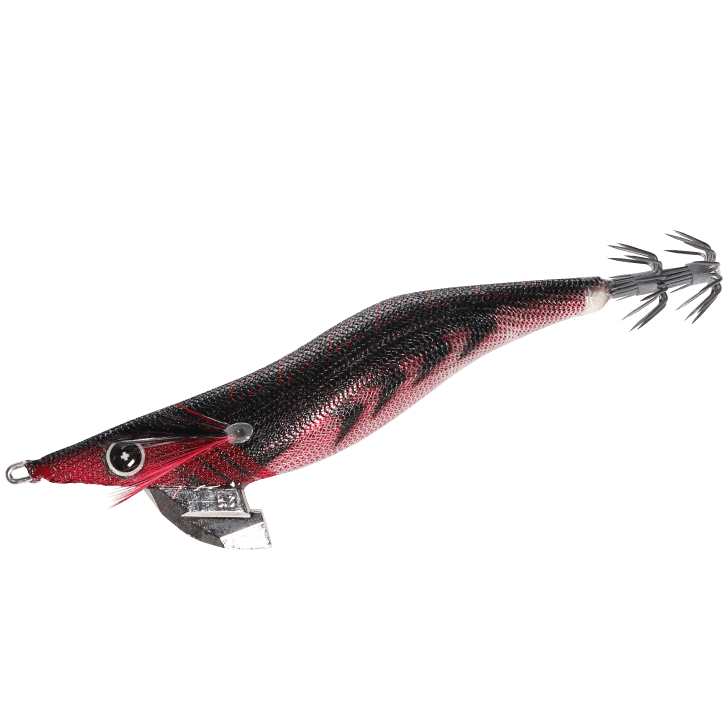
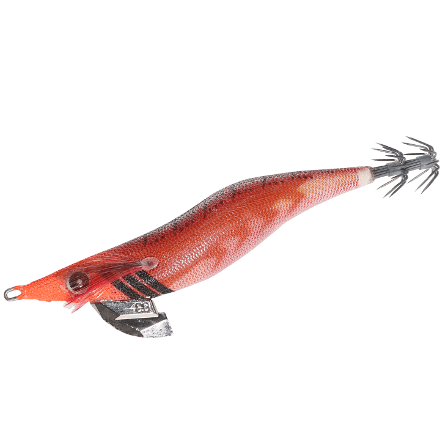
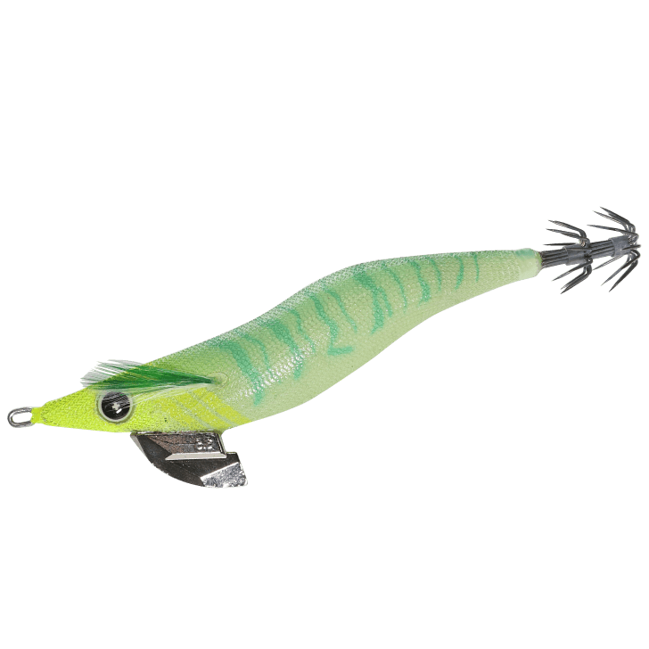
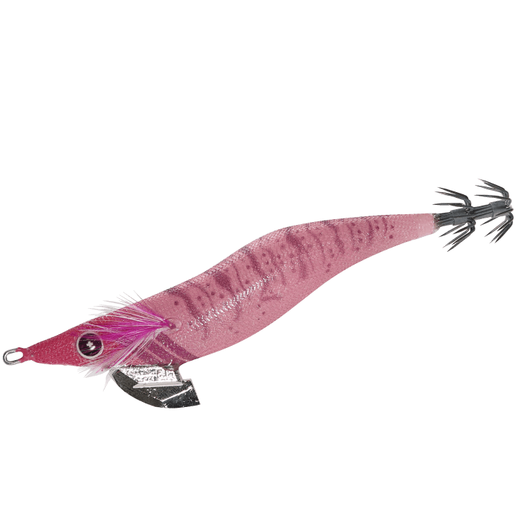

スクイッドジャンキー ライブリーダート
（SQUID JUNKY LIVELY DART）
スクイッドジャンキー ライブリーダートはHAYABUSA（ハヤブサ）のエギです。
2021年に始動したハヤブサのエギシリーズ「スクイッドジャンキー（SQUID JUNKY）」の第1弾として登場したモデル。「生感」を徹底的に追求した"ライブリーアクション"と、イカが抱きやすいフォール姿勢で、手頃な価格ながらこだわりの詰まったエギに仕上がっているのが最大の魅力です。

画像出典:ハヤブサ公式HP
スペック
- メーカー
- HAYABUSA（ハヤブサ）
- タイプ
- エギ（ダートタイプ）
- 型番
- FS510
- サイズ
- 2.5号／3号／3.5号
- 沈下速度
- 約3.3秒/m（3.5号）
- フック
- 瞬貫段差フック（フッ素コート）
- カラー
- 全20色（うち10色がケイムラ）
- ターゲット
- アオリイカ
- 価格
- 825円（2.5号）／847円（3号）／869円（3.5号）（税込）
- 発売
- 2021年3月
▼今すぐチェック

スクイッドジャンキー ライブリーダートの特徴
本物の小魚のような「生感」のあるダートと、抱かせるためのフォールを両立した手頃なエギ
-
「生感」を追求したライブリーアクション
ボディやシンカーの形状にこだわり、なめらかなダートを実現。ダートする瞬間には平打ちのフラッシングが入り、驚いた小魚が身をひるがえすような動きを演出する。
-
シャクリが軽いスライスシンカーとスリムボディ
シンカーは水を切りやすい独自の薄型形状「スライスシンカー」で、シャクった時の抵抗を軽減。スリムなボディ設計とあわせて、シャクリに対してキレのある反応を返してくれる。
-
イカが抱きやすいフォール姿勢とスローフォール
フォール中はイカが最も抱きやすい姿勢・角度を保つように設計。沈下速度は3.5号で約3.3秒/mと、一般的なエギより少しゆっくりめの設定で、エギを見せる時間を長く取れる。
スクイッドジャンキー ライブリーダートの使い方
基本はシャクリとフォールの繰り返し。キャストして狙いのレンジまで沈めたら、2〜3回シャクってダートさせ、テンションをかけたままフォールさせてイカが抱くのを待つ。
スライスシンカーでシャクリが軽いので、強くシャクらなくてもダートが出やすい。ダートの瞬間の平打ちフラッシングでイカに気づかせ、ゆっくりしたフォールで抱かせる、というリズムを意識しましょう。
スクイッドジャンキー ライブリーダートの得意な状況
イカの活性が高く、ダートに反応してエギを追ってくる状況が最大の出番。
回遊待ちで広く投げ続ける場面や、藻場の周りを丁寧に探る場面でも使いやすく、手頃な価格なので根掛かりの多いポイントで攻めたい時にも選びたい1本です。
ワンポイント
フォールがややゆっくりめの設定なので、水深がある場所や潮が速い場所では、ボトムを取るまでのカウントを長めにとるのがコツです。
カラー名の頭に「UV」が付くカラーはすべてケイムラ仕様。日中の回遊待ちではUVカラー、藻場撃ちではシルエットがはっきり出るカラーと、状況で使い分けると組み立てやすくなります。
サイズの使い分け
| サイズ | 価格（税込） | 得意な場面 |
|---|---|---|
| 2.5号 | 825円 | 秋の新子シーズン・小型のイカに |
| 3号 | 847円 | 秋の後半〜冬・オールラウンドに使いやすい |
| 3.5号 | 869円 | 春の親イカ狙い・深場や風が強い日（沈下速度 約3.3秒/m） |
スクイッドジャンキーはライブリーダートを第1弾に、イカが長く抱く「ハグクロス」を採用した「ハグハグ」などへ広がったシリーズ。ライブリーダートは、シリーズの原点となる「生感」重視のダートモデルだ。
オススメカラー
スクイッドジャンキー ライブリーダートは全20色展開で、そのうち半分の10色がケイムラ仕様。エギングでオススメのカラーを紹介します。

コントラストマジック通称「コンマジ」。藻場撃ちをはじめ、さまざまな状況で頼れるメーカーイチオシのカラー。

完熟トマト藻場の周りでもシルエットをはっきり見せられるカラー。藻場撃ちのローテーションに。

UVメロンソーダ（UVカラー）カラー名の頭に「UV」が付く10色はすべてケイムラ仕様。日中の回遊待ちでアピールしたい時に。

UVセクシーピーチ（セクシーシリーズ）ケイムラクリアをベースにしたスケルトン仕上げの5色。澄み潮でスレたイカに見せたい時に。
画像出典:ハヤブサ公式HP
スクイッドジャンキー ライブリーダートに似ているルアー
-
 エギ王LIVE
ヤマシタ
詳細はこちら＞
エギ王LIVE
ヤマシタ
詳細はこちら＞
誰でもキレのあるダートが出せる軽快ダートモデル。シャクリが軽く、ダートで誘うという使い方がライブリーダートと近い。
-
 エギ王K
ヤマシタ
詳細はこちら＞
エギ王K
ヤマシタ
詳細はこちら＞
低活性のイカを攻略するタフコンディション専用モデル。ダートに反応が薄くなってきた時の持ち替え先に。
-
 アオリーQ 大分布巻
デュエル
詳細はこちら＞
アオリーQ 大分布巻
デュエル
詳細はこちら＞
当時の仕様を再現した復刻エギ。手頃な価格のエギをローテーションに加えたい時の選択肢として。